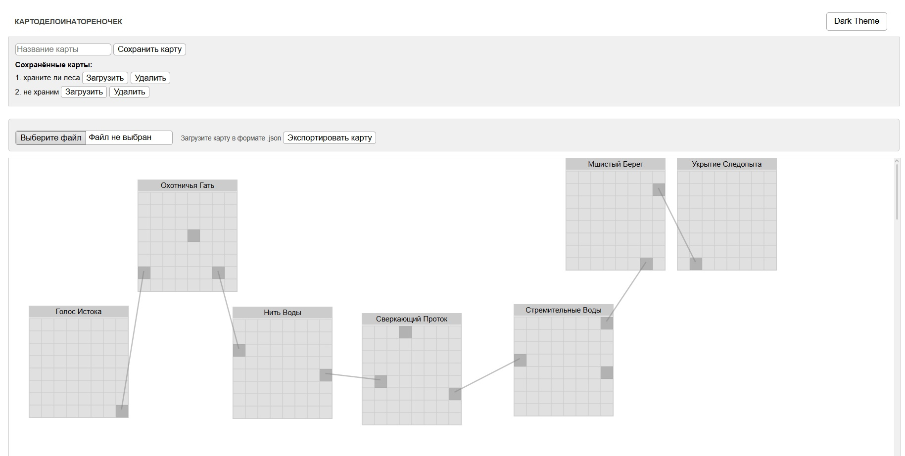

Картоделоинатореночек — это расширение для браузеров Opera и Chrome, которое помогает автоматически собирать карту игрового мира Kinwoods. Оно сохраняет информацию о переходах между локациями и позволяет визуализировать карту прямо в браузере. Подходит как подсказка для ориентирования и планирования маршрутов.
chrome://extensions/ или opera://extensions/, включи "Режим разработчика", нажми “Загрузить распакованное расширение” и выбери папку с архивом.
Kinwoods Collector v5: data committed — всё работает.
.json.
💡 Совет: держи оба расширения под рукой — одно для сбора, другое для просмотра. Так ты всегда будешь знать, куда лапы ещё не ступали!
